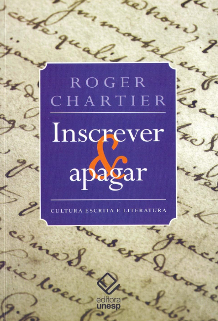

Notícias do HIFEM
Registros recentes de eventos, publicações, memórias, atividades acadêmicas e informações institucionais relacionadas ao grupo.
Esta página reúne atualizações em formato breve. Cada item apresenta uma chamada resumida; ao acessar a notícia, é possível consultar informações completas, detalhes do evento, contexto histórico, links e materiais relacionados.
-
XI
XI Encontro Nacional do HIFEM
O XI Encontro Nacional do HIFEM será realizado em 2026, dando continuidade à prática anual de encontros voltados ao diálogo, à divulgação e à discussão das pesquisas produzidas pelo grupo.
Ler notícia completa -
30
HIFEM: 30 anos de trajetória coletiva
Criado em 1996, na Faculdade de Educação da UNICAMP, o HIFEM reúne pesquisadores em torno das relações entre História, Filosofia e Educação Matemática.
Ler notícia completa -

Leitura de Roger Chartier no HIFEM
O grupo deu continuidade aos encontros de leitura e discussão a partir do livro Inscrever e apagar: cultura escrita e literatura, de Roger Chartier.
Ler notícia completa -
CNPq
Espelho do HIFEM no Diretório dos Grupos de Pesquisa
Consulte o registro institucional do HIFEM no Diretório dos Grupos de Pesquisa do CNPq, com informações oficiais sobre o grupo.
Acessar página externa -
FE
Página histórica do HIFEM na Faculdade de Educação da UNICAMP
Registro antigo do grupo vinculado à Faculdade de Educação da UNICAMP, útil como memória institucional e fonte complementar para a reconstrução da trajetória do HIFEM.
Acessar página externa